Characters
Characters Places
Places Stories
Stories Species
Species Organizations
Organizations Glossary
Glossary Transportation
Transportation Monsters
Monsters Jobs
Jobs Summons
Summons Items
Items Magic/Skills
Magic/Skills Weapon Types
Weapon Types In-Crossovers
In-Crossovers Ex-Crossovers
Ex-Crossovers Release Dates
Release Dates Name Origins
Name Origins Famous Moments
Famous Moments Music Database
Music Database Features
Features Game Help
Game Help Game Evolution
Game Evolution Square Art
Square Art Fan Flash
Fan Flash Final Fantasy Forums
Final Fantasy Forums Updates
Updates Site Info
Site Info Feedback
Feedback Full Index
Full Index Links
Links Staff
StaffI couldn't get a scan of the Serpentarius symbol, so I made my own rather crude one. *^_^*
Aquarius
Image: 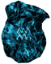
Sign: Water Carrier
Symbol: 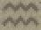
History: The Aquarius Stone fell into the hands of Reis Duelar, Beowulf's love. She keeps it even when she becomes a Holy Dragon. Ramza and Beowulf recover it when they rescue her from the Goland Mines. It is then used to power Construct 8. It is not assosciated with a Lucavi.
Aries
Image:
Sign: Ram
Symbol: 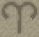
History: The Aries Stone was given to Wiegraf upon his entrance into the Knights Templar. It was taken by Ramza when he beat Wiegraf. Aries is assosciated with the Lucavi demon Belias, the Gigas (alterego of Wiegraf). Note that Belias greatly resembles a ram.
Cancer
Image: 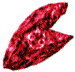
Sign: Crab
Symbol: 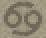
History: The Cancer Stone powers Construct 7-new, the guardian of the Nelveska Temple. When Ramza defeats Construct 7-new, the Cancer Stone is used to restore Reis to her human form. It is later taken to Goug and used to power the heavenly globe device which summons Cloud from his world. It is not assosciated with a Lucavi.
Capricorn
Image: 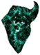
Sign: Goat
Symbol: 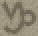
History: The Capricorn Stone was given to Dycedarg by Loffrey. After Zalbaag kills Dycedarg at Eagrose, Dycedarg turns into the Wroth, Adrammelech, who kills Dycedarg. Ramza defeats Adrammelech and takes the Stone. (Note that Adrammelech resembles a goat.)
Gemini
Image: 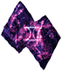
Sign: Twins
Symbol: 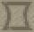
History: The Gemini Stone is in the keeping of Marquis Elmdore. After defeating him, Ramza takes the Stone. It is assosciated with the Dark Angel, Zarela (Elmdore's alterego).
Leo
Image: 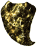
Sign: Lion
Symbol: 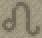
History: Leo is in the keeping of Folmarv. It is assosciated with the Bringer of Order, Hashmal
(Folmarv's alterego). Note that Hashmal
closely resembles a lion.
Libra
Image: 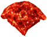
Sign: Measuring Scales
Symbol: 
History: The Libra Stone is a keepsake of the Orlandeau family. Orlandeau gives it to Ramza when he joins his party. It is not assosciated with a Lucavi.
Pisces
Image: 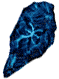
Sign: Fish
Symbol: 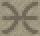
History: The Pisces Stone was in the keeping of Isilud. After he is killed by Folmarv, he gives it to Alma. However, Alma drops it when Folmarv enters and takes her away. Ramza later enters and finds the Pisces Stone. It is not assosciated with a Lucavi.
Sagittarius
Image: 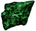
Sign: Archer
Symbol: 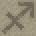
History: The Sagittarius Stone is in the keeping of Meliadoul. She gives it to Ramza when she joins his party. It is not assosciated with a Lucavi.
Scorpio
Image: 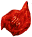
Sign: Scorpion
Symbol: 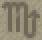
History: The Scorpio Stone is in the keeping of Cardinal Draclau. When Ramza defeats him, he takes the Stone. When Ramza enters Orbonne Monastery to chase the Knights Templar, he gives the Stone to Alma, who's captured by Isilud and taken to Riovanes. The Stone is given to Isilud, who subsequently loses it to Marach. When Marach joins Ramza's party, he gives Ramza the Stone. Scorpio is assosciated with Cuchulainn, the Impure (Draclau's alterego).
Serpentarius
Image: 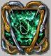
Sign: Snake
Symbol: 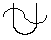
History: The Serpentarius Stone is either found or created by Elidibus, who takes it to the lowest level of Midlight's Deep. When Ramza reaches him, he transforms into a Lucavi (who is also called Elidibus). When Ramza defeats him, he takes the Stone.
Taurus
Image: 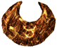
Sign: Bull
Symbol: 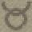
History: The Taurus Stone was found by Besrudio in the Goug mines. Mustadio gives it to Ramza when they defeat Ludovich's forces at Goug. Ramza gives the Taurus Stone to Alma when he chases the Knights Templar in Orbonne Monastery, but she is captured by Isilud and taken to Riovanes. The Stone then falls into the hands of Marach. Barrington kills Marach for the Stone, but after Ramza defeats both Barrington and Elmdore (who also wants the Stone), Rapha uses it to bring Marach back to life. Marach gives it to Ramza when he joins his party.
Virgo
Image: 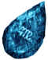
Sign: Virgin
Symbol: 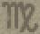
History: The Virgo Stone is a keepsake of the royal family. It was given to Simon Penn-Lachish when Ovelia was taken to Orbonne Monastery, as proof of her birth. However, Isilud and the Knights Templar take it from Simon, and give it to Folmarv.. The Virgo Stone is what brings St. Ajora back from the dead. It is assosciated with Ultima, the Bloody Angel (St. Ajora's alterego).
Final Fantasy, all games and animation bearing the Final Fantasy name, and all characters in said games or animation are copyright their respective creators, including but not limited to Squaresoft, Square Enix, Square EA, Tokyo TV, and ADV Films.